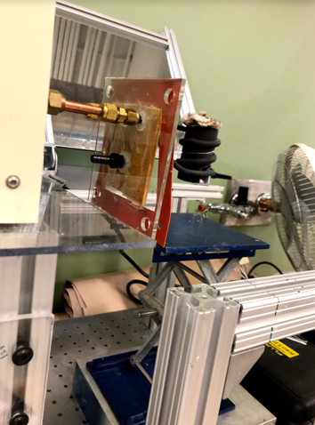
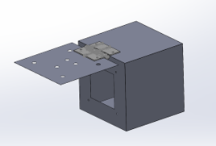

Research
ELO's, UROP's, Publications
Quad-SDK Update: Estimation, Underbrush, and Other Improvements
This report presents extensions to Quad-SDK, a full-stack, open-source ROS based framework for control of quadrupedal locomotion. The modular software integrates motion planning, control, simulation, and estimation, while streamlining the development of novel robotics packages. With this update, Quad-SDK now incorporates an Extended Kalman Filter (EKF) for reliable onboard state estimation. Additionally, a specialized controller designed for walking through entanglements has been added, allowing the robot to disentangle itself from vine-like obstructions. Both serve to enable more reliable outdoor locomotion. Finally, several improvements have been made to the software architecture.
Proprioception and reaction for walking among entanglements
Entanglements like vines and branches in natural settings or cords and pipes in human spaces prevent mobile robots from accessing many environments. Legged robots should be effective in these settings, and more so than wheeled or tracked platforms, but naive controllers quickly become entangled and stuck. In this paper we present a method for proprioception aimed specifically at the task of sensing entanglements of a robot's legs as well as a reaction strategy to disentangle legs during their swing phase as they advance to their next foothold. We demonstrate our proprioception and reaction strategy enables traversal of entanglements of many stiffnesses and geometries succeeding in 14 out of 16 trials in laboratory tests, as well as a natural outdoor environment.
MIT ELO Dot's Sit to Stand
Objective:
Through MIT’s ELO Program, a team of three undergraduate students (including myself) partnered with
Prof. Daniel Frey and VME (Volunteers for Medical Engineering) to design a portable, compactable
sit-to-stand apparatus to help our elderly client with her needs in handicapped bathrooms. As the
design needed to still function as a wheelchair, the design adds less than 15 pounds to the frame of
the chair, while narrowly fitting within its margins. Our first prototype is pictured below:

Solution:
The device is tailored for the transfer of the user from the wheelchair onto the surface of the
toilet seat. It accomplishes this by first securing the user to the sit to stand using a harness. An
attendant then uses a lever made from a ratchet wrench to rotate the pulley and gently lift the user
out of their seat. Finally, the pulley system is mounted on a rotating base, which moves the user
over the toilet for cleaning. The system is held secure by mounting onto the ADA required grab bar
in the bathroom.
The product was manufactured with the help of MIT’s D-LAB. Additionally, we partnered with MIT
Sandbox to market and sell the product to assistive care facilities and hospitals.
As a member of the team, my work focused on exploring and designing possible methods of actuation
and organizing the manufacturing of parts.
Applied Skills: Solidworks, Design and Manfacturing, Iterative Design
MIT UROP: Rohsenow Kendall Heat Transfer Laboratory (Summer 2019)


During my freshman summer, I fabricated a glass heat resistant enclosure for thermal energy storage experiments. The preexisting acrylic shielding was unable to handle the heat emitted by the Induction Heater and had begun melting. Instead, I designed an easily replacable, heat resistant enclosure, to better suit the needs of the device and our research. I also performed experiments on various materials to determine latent heat properties for storing electric energy through TES.
While in the RK, I also designed and repaired lab specific lab specific equipment for HFI-5 Induction Heater, Cooling System.
MIT Projx/MITERS: Electric Skateboard (Spring 2019)
During my freshman year of undergrad, I was sponsored by MIT through Projx in the construction of an
electric longboard. I designed an adjustable motor mount to secure the motor to the longboard
trucks. I also designed an 48T HTD5 Wheel Pulley to fit my particular wheels, which was printed out
of ABS for strength.
The mount components were manufactured using ½” 60-61 aluminum and a shop waterjet and mill. An ESC
(Electronic Speed Controller) was used for motor control while parallel LiPo batteries were used to
power the system. The longboard reached a recorded max speed of 28 mph. The build was completed at
MITERS (MIT Electronics Research Society).
Columbia University: Lamont Doherty Earth Observatory (Spring 2018)
Starting in my junior year of high school, I worked as a research assistant at Columbia Unversity. I assisted in the creation of a Sequence Stratigraphy Algorithm to determine Seismic Risk in the Marmara Sea. The Python based model was then used to analyze Seismic Data from the region. Paper won 1st Place at Sigma Xi Student Research Showcase in the GeoSciences Division.